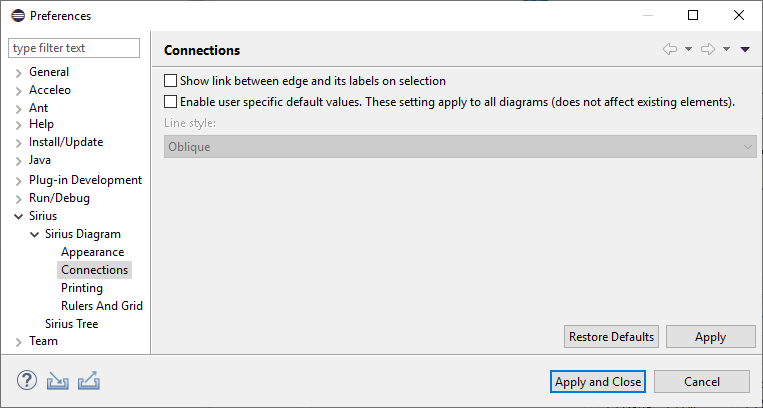
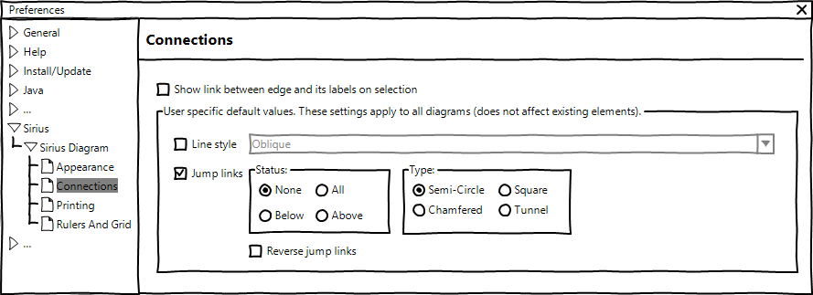

Summary: The goal of this feature is to allow end-user to initialize jump links properties of new edge with specific default values. These properties are: the status and the type of the jump links, and the reverse option.
| Version | Status | Date | Authors | Changes | |---------|-----------|------------|-----------|---------------------------------| | v0.1 | DRAFT | 2019-12-05 | lredor | Initial version. | | v0.2 | DRAFT | 2019-12-06 | lredor | Change target preference page | | v0.3 | ACCEPTED | 2020-01-17 | lredor | No change |
Relevant tickets:
Currently, the end-user can define a default value for the routing style of all new edges by using the preference available in
Preferences>Sirius>Sirius Diagram>Connections:

The goal of this feature is to add new preferences for all properties corresponding to jump links. Here is these properties (visible in the Appearance tab in the Properties view when an edge is selected):
The new preferences will be displayed like this:

These preferences values will be considered in
org.eclipse.sirius.diagram.ui.internal.view.factories.DEdgeViewFactory during the creation of new edge.
Indeed, unlike the existing "Line style" preference, the new preferences will not be considered in the method
org.eclipse.sirius.diagram.business.internal.metamodel.helper.StyleHelper.updateEdgeStyle(EdgeStyleDescription, EdgeStyle, Option<EdgeStyle>), as the jump link properties are stored in the GMF part of the model and not in the Sirius part of the model.
If the end-user launches the action "Reset style properties by default values", the end-user jump link preferences must be used instead of the default Sirius values, ie:
This feature will be available only in RCP as it is based on existing GMF properties.
There is no migration. This feature only allows to initialize default values that the end-user can already change manually for each edge.
No metamodel change.
New APIs will be added in
org.eclipse.sirius.diagram.tools.api.preferences.SiriusDiagramCorePreferences. The existing
PREF_ENABLE_OVERRIDE will probably be renamed according to new preferences (not mandatory, at least marked at deprecated).
The changes concern only the preference page described above.
They will be done in
org.eclipse.sirius.diagram.ui.internal.preferences.DiagramConnectionsPreferencePage.
These new preferences must be documented in the New and Noteworthy documentation. There is currently no Sirius documentation about default line style value. A full chapter concerning the line style default value and new jump link preferences must be added (in the section "Sirius/Sirius User Manual/Diagrams/Preferences").
The test class org.eclipse.sirius.tests.unit.api.routing.EdgeRoutingStyleEndUserOverrideTest can be completed with the new preferences.